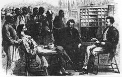

Questions and Slides for Week 9
Questions
1. Was Radical Reconstruction doomed to failure? Consider all the "players"
(President, Congress, the Republicans in the South, the ex-Confederates, and
African-Americans) when formulating your answer.
2. An historian of this era writes that "The freedmen made ana amazing transformation
after the Civil War; slaves became political men acting forcefully to crush the most
cherished illusions of their former masters. The tragedy of Reocnstruction is that
they received so much less than they gave." That do you think is meant by this statement.
3. Explain the specifics that lead Perman to assert that:
"Reconstruction had pointed the way to a New South: its
overthrow ensured that whatever was new about the South
in the last quarter of the nineteenth century would be severly
circumscribed by old practices and priorities."
Slides
The Ruins of Richmond
"The Lost Cause"
"Veteran in a New Field"
Andrew Johnson
|
The United
States in Crisis |
| Military Casualties |
300,000 Union soldiers dead
275,000 Confederate soldiers dead
625,000 Total dead
275,000 Seriously wounded or maimed
900,000 Total casualties in a nation of 15 million
|
| Physical/Economic Crisis |
|
The South devastated, its railroads, industry, and some major cities
in ruins; its fields and livestock wasted
|
| Constitutional Crisis |
|
Eleven ex-Confederate states not a part of the Union, their status
unclear and uncertain
|
| Political Crisis |
|
Republican party (entirely of the North) dominant in Congress; a former
Democratic slave-holder from Tennessee, Andrew Johnson, in the presidency
|
| Social Crisis |
|
Nearly 4 million African-American freedmen throughout the South face
challenges of survival and freedom, along with thousands of hungry
demobilized white southern soldiers and displaced white families
|
| Psychological Crisis |
|
Incalculable resentment, bitterness anger, and despair throughout North
and South
|
|
A Freedman's Work Contract
 | | The Freedmen's Bureau had fewer resources
in relation to its purpose than any agency in the
nation's history. Harper's Weekly published this
engraving of freedmen lining up for aid in Memphis 1866.
|
STATE OF SOUTH CAROLINA
Darlington District
ARTICLES OF AGREEMENT
This Agreement entered into between Mrs. Adele Allston
Exect of the one part, and the Freedmen and Women of The
Upper Quarters plantation of the other part
Witnesseth: That the latter agree, for the remainder
of the present year, to reside upon and devote their
labor to the cultivation of the Plantation of the
former. And they further agree, that they will in all
respects, conform to such reasonable and necessary
plantation rules and regulations as Mrs. Allston's Agent
may prescribe; that they will not keep any gun, pistol,
or other offensive weapon, or leave the plantation
without permission from their employer; that in all
things connected with their duties as laborers on said
plantation, they will yield prompt obedience to all
orders from Mrs. Allston or his [sicl agent; that they
will be orderly and quiet in their conduct, avoiding
drunkenness and other gross vices; that they will not
misuse any of the Plantation Tools, or Agricultural
Implements, or any Animals entrusted to their care, or
any Boats, Flats, Carts or Wagons; that they will give
up at the expiration of this Contract, all Tools &
c., belonging to the Plantation, and in case any
property, of any description belonging to the Plantation
shall be willfully or through negligence destroyed or
injured, the value of the Articles so destroyed, shall
be deducted from the portion of the Crops which the
person or persons, so offending, shall be entitled to
receive under this Contract Any deviations from the
condition of the foregoing Contract may, upon sufficient
proof, be punished with dismissal from the Plantation,
or in such other manner as may be determined by the
Provost Court; and the person or persons so dismissed,
shall forfeit the whole, or a part of his, her or their
portion of the crop, as the Court may decide. In
consideration of the foregoing Services duly perfommed,
Mrs. Allston agrees, after deducting Seventy five
bushels of Corn for each work Animal, exclusively used
in cultivating the Crops for the present year; to turn
over to the said Freedmen and Women, one half of the
remaining Corn, Peas, Potatoes, made this season. He
[sic] further agrees to furnish the usual rations until
the Contract is performed. All Cotton Seed Produced
on the Plantation is to be reserved for the use of the
Plantation. The Freedmen, Women and Children are to be
treated in a manner consistent with their freedom.
Necessary medical attention will be furnished as
heretofore. Any deviation from the conditions of this
Contract upon the part of the said Mrs. Allston or her
Agent or Agents shall be punished in such manner as may
be determined by a Provost Court, or a Military
Commission. This agreement to continue till the first
day of January 1866. Witness our hand at The Upper
Quarters this 28th day of July 1865.
|
Conflicting Goals
During Reconstruction |
| Group |
Goals |
Victorious
Northern
("Radical")
Republicans |
1. Justify the costs of war by remaking southern society in the image
of the North.
2. Political but not physical or economic punishment of Confederate
leaders.
3. Continue programs of economuc progress begun during the war: high
tariffs, railroad subsidies, national banking.
4. Maintain the Republican party in power in the nation.
5. Help the freedmen make the transition to full freedom by
providing them with the tools of citizenship (suffrage) and equal
economic opportunity.
6. Governmental role in achieving these idealistic commitments to justice,
equality, and morality.
|
Northern
Moderates
(Republicans
and
Democrats) |
1. Speedy establishment of peace and order, reconciliation between
North and South.
2. Leniency, amnesty, and merciful readmission of southern states
to the Union.
3. Perpetuate the primacy of land ownership, free labor,
market competition, and other capitalist values of nineteenth-century
American life.
4. Local self-determination of economic and social issues, limited
interference by the national government.
5. Limited support for black suffrage.
6. Restraint on efforts to remake social and racial relationships; skepticism
of "crusades".
|
Old
Southern
Planter
Aristocracy
|
1. Celebrate the noble "lost cause" by defiantly asserting the old
ways.
2. Protection from possibilities of northern or black uprisings and
revenge.
3. Amnesty, pardon, and restoration of confiscated lands.
4. Restore traditional plantation-based market-crop economy with blacks
as cheap labor force.
5. Restore traditional political leaders in the states.
6. Restore traditional paternalistic race relations as basis of
social order.
|
New
"Other South"
Yeoman
Farmers
and
Ex-Whigs
(Unionists) |
1. Speedy establishment of peace and order, reconciliation between
North and South.
2. Recognition of loyal role and economic value of
upcountry small yeoman farmers.
3. Create greater diversity in southern economy: capital investments
in railroads, factories, and the diversification of agriculture.
4. Displace the planter aristocracy with new political leaders drawn from
loyal Unionists and new economic interests.
5. Limited rights and powers to freedmen; suffrage granted only to the
educated few.
|
Black
Freedmen |
1. Physical protection from abuse and terror by local whites.
2. Economic independence through land of one's
own (40 acres and a mule) and equal access to trades.
3. Political participation through the right to vote.
4. Equal civil rights and protection under the laws,
especially rights of mobility and testimony in court.
5. Educational opportunity
and the development of family and cultural bonds.
|
|